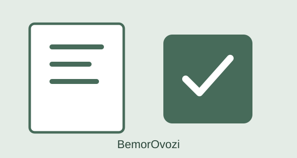
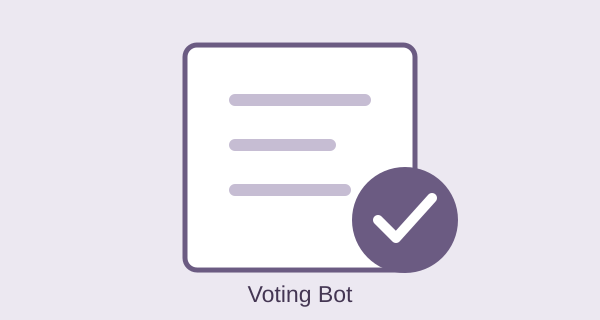
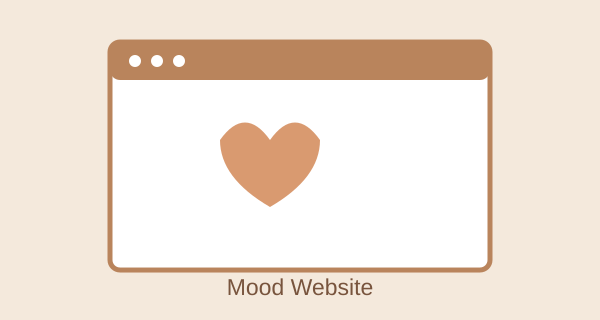

BemorOvozi
A project concept that helps patients share feedback and complaints with clinics through a QR code.
View project ↗HELLO, I'M
IT Student · Aspiring Developer
“I learn, create, and grow.”
Explore my projects ↓01 / ABOUT ME
I study at Specialized School No. 2 in Khiva. I am interested in IT, programming, and learning about new technologies. I put what I learn into practice by building small projects. In the future, I want to create useful products that help people.
02 / WHAT I KNOW
03 / WHAT I'VE BUILT

A project concept that helps patients share feedback and complaints with clinics through a QR code.
View project ↗
A Telegram bot designed to let students vote while ensuring each participant can vote only once.
View project ↗
A simple webpage with uplifting thoughts and kind messages to help brighten someone's day.
View project ↗Note: replace YOUR_GITHUB_USERNAME in the project links with your GitHub username.
04 / EDUCATION & ACHIEVEMENTS
Specialized School No. 2, Khiva
IELTS 7.5 · Mathematics Certificate B+ (99.62%)
1st place — City Informatics Olympiad · 1st place — City English Olympiad · 2nd place — IT Park Ideathon · 2nd place — IT Community Debate
Uzbek — Native · English — C1+ · Turkish — B1+
05 / GET IN TOUCH
Feel free to reach out for collaborations or questions.
Before submitting the website, replace the email, Telegram, and GitHub links with your own.